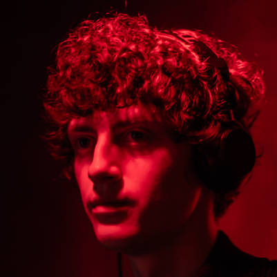
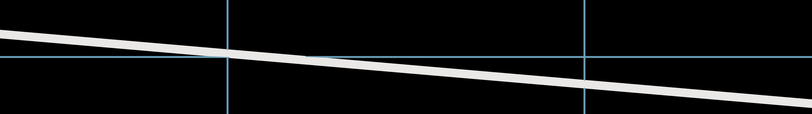
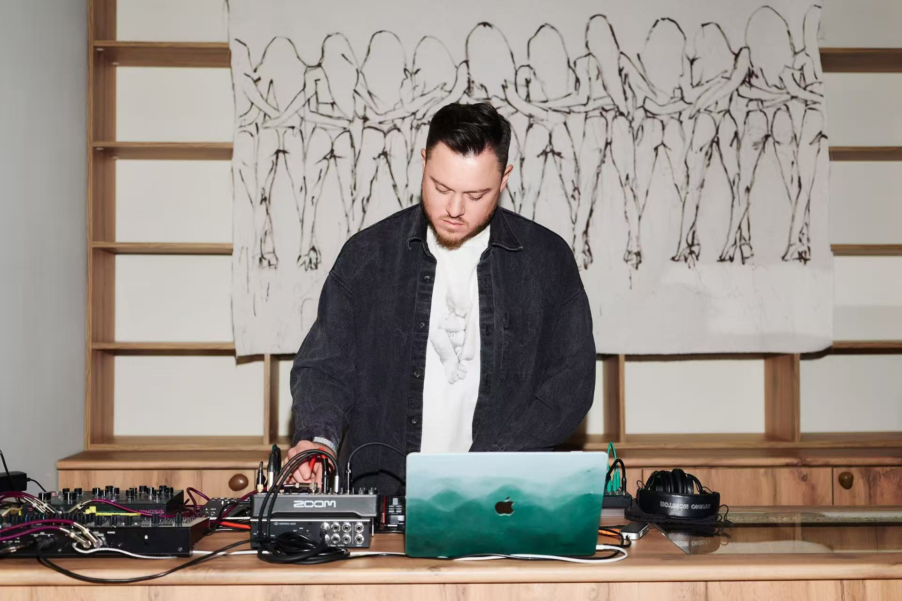
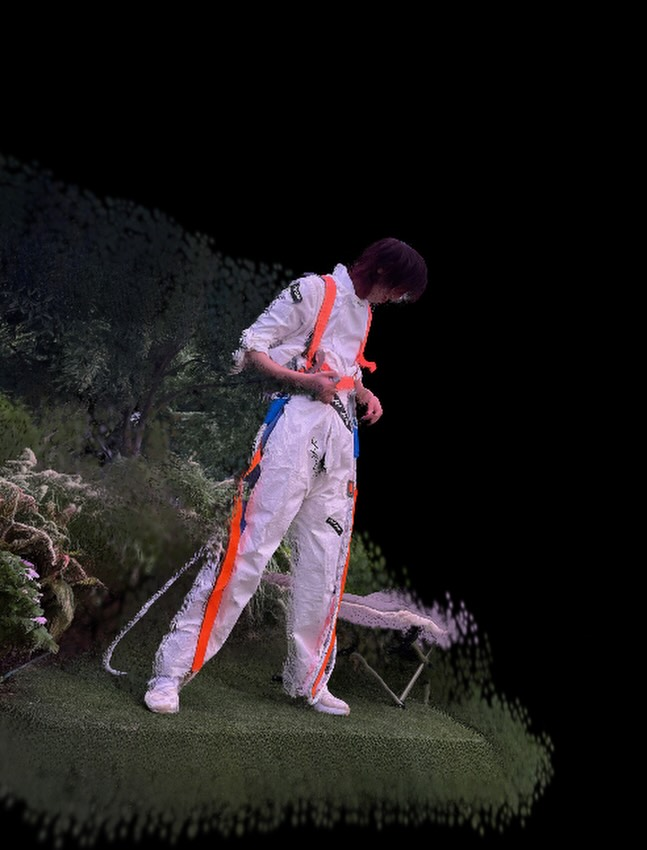

Shukai / Mark
DJ、黑胶收藏者、声音设计师与音乐制作人。为合作提供地下电子音乐现场经验、DJ 文化判断、音乐组织能力，以及当前 liveset 中的 loop / pressure 输入方向。

Shukai / Mark, Georgy Robakidze (RÖ) and Ewan Qian are preparing a live audiovisual unit for the 2026 UFO Terminal creation camp. The current work is an ongoing flat LED canvas system for rehearsal, live triggering, and spatial visual performance.
这组三人组合不是把“视觉 + 音乐 + 声音艺术”简单相加，而是把地下电子音乐现场、声音艺术方法与空间影像系统放进同一个可排练的现场结构里。

DJ、黑胶收藏者、声音设计师与音乐制作人。为合作提供地下电子音乐现场经验、DJ 文化判断、音乐组织能力，以及当前 liveset 中的 loop / pressure 输入方向。

声音艺术家、现场表演者与 DJ，工作横跨 ambient、drone、experimental、IDM、hypnotic techno 与声音艺术驻留/机构呈现路径。

负责把声音、时间、图像和屏幕比例组织成可执行的现场视觉系统：平面 LED 画布、cue 语法、实时覆盖层、排练测试与现场优先级。
SRE 当前的制作方向是 flat LED canvas workflow。它不是 360 度渲染，也不是场地模型预演，而是面向真实演出风险的平面超宽画布系统。
这个判断来自排练需求：Arena 需要稳定播放超宽平面媒体，Blender 只负责已经测试过的平面 overlay 或替代输出，MIDI / 手动控制被压缩到少量清晰信号，V09 黑场始终保持一键可达。
因此，这个网页展示的是正在形成中的现场演出系统，而不是最终视觉成片。当前成果是一个 60fps 的排练框架：它可以用较低的实时分辨率维持高帧率运行，再以像素化、非原生分辨率的方式投射或映射到更高分辨率现场画布上，作为长期实际演出系统的一次 demo。
当前排练优先级不是系统复杂度，而是现场可靠性。每个触发都必须只有一个明确任务，先证明基础链路稳定，再继续扩展声音分析和视觉层。
这套 liveset 的方法重点不是把所有音乐信息自动分析出来，而是在排练阶段保留可调试、可抢救、可由人判断的现场结构。